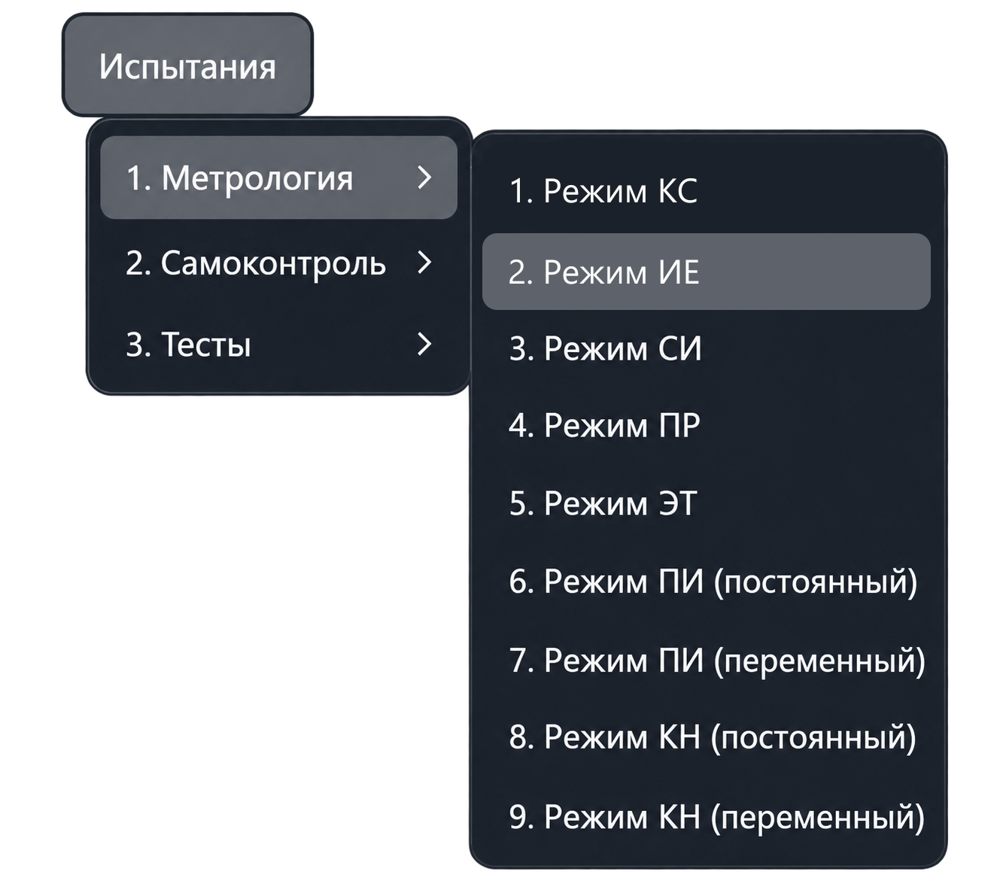
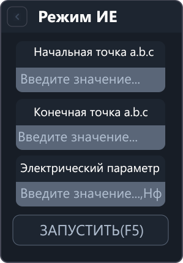

Режим ИЕ
Режим ИЕ проверяет измерение электрической ёмкости мультиметром. Приложение измеряет ёмкость между заданными точками, сравнивает результат с эталонным значением и рассчитывает погрешность.
Откройте «Испытания → Метрология → Режим ИЕ». Команда открывает рабочую вкладку; измерение запускается отдельно.


Параметры
| Поле | Что указать |
|---|---|
| Начальная точка a.b.c | Первую точку подключения эталонной ёмкости. |
| Конечная точка a.b.c | Вторую точку подключения эталонной ёмкости. |
| Электрический параметр | Значение подключённой эталонной ёмкости в нанофарадах (нФ). |
В адресе a.b.c указываются номер шасси, номер модуля коммутации
и номер точки. Используйте фактические точки подключения эталонной ёмкости.
Если значение эталона указано в других единицах, переведите его в нанофарады: например, 1 мкФ = 1000 нФ.
Порядок работы
- Подключите эталонную ёмкость к выбранным точкам системы.
- Введите начальную и конечную точки.
- В поле «Электрический параметр» укажите значение эталонной ёмкости в нФ.
- Нажмите «Запустить» или F5 в активной вкладке режима.
- Просмотрите результат и погрешность в протоколе. Для повторного измерения используйте действие повтора в запросе приложения.
Ввод параметров сам по себе не запускает измерение. Перед работой приложение проверяет значения и наличие необходимого оборудования в конфигурации.
Что выполняется после запуска
Приложение подключает необходимую аппаратуру, настраивает коммутацию заданных точек, переводит мультиметр в режим измерения ёмкости и выполняет измерение.
При работе с аппаратурой из обычного результата измерения вычитается собственная ёмкость коммутации, заданная в конфигурации. Если точки относятся к разным модулям, используется значение модуля с большим номером.
Результаты
- Измеренная ёмкость — результат с учётом компенсации собственной ёмкости коммутации.
- Допустимый диапазон — границы, рассчитанные приложением для заданного эталонного значения.
- Погрешность — разность измеренной и эталонной ёмкости, в нФ.
Результат соответствует допустимому диапазону, если он находится между нижней и верхней границами включительно. Выход за границы отмечается в протоколе.
Если мультиметр возвращает Overload (перегрузку измерительного диапазона), приложение отмечает это как ошибку измерения. Проверьте подключение и выбранное значение перед повтором.
Если в серии выполнено не менее двух измерений, при завершении приложение выводит сводку максимальной отрицательной и положительной погрешности.
В поле «Электрический параметр» вводится эталонная ёмкость. Прибавлять к ней собственную ёмкость коммутации не нужно: приложение учитывает её при обработке результата.
Другие режимы описаны в разделе «Меню „Метрология“».